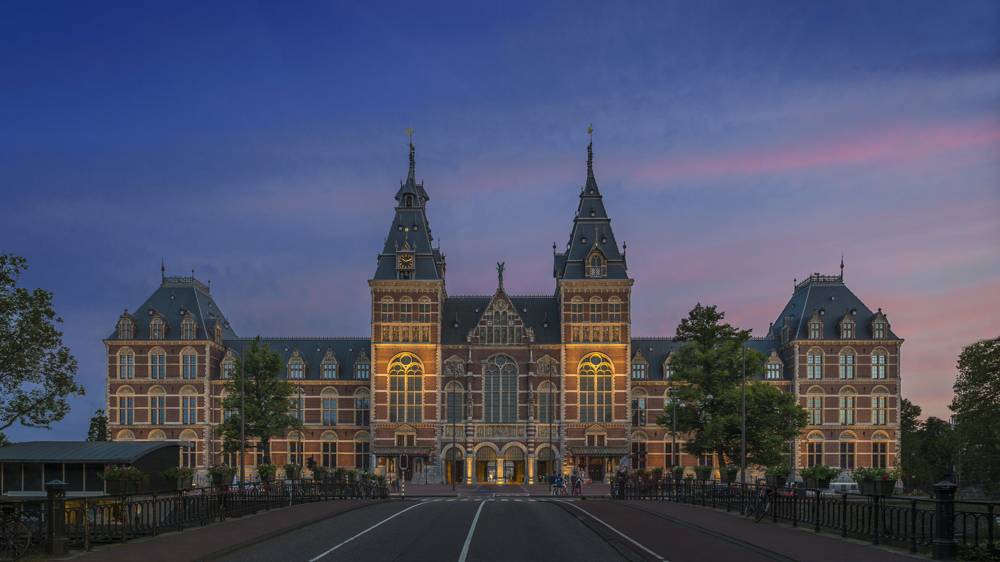
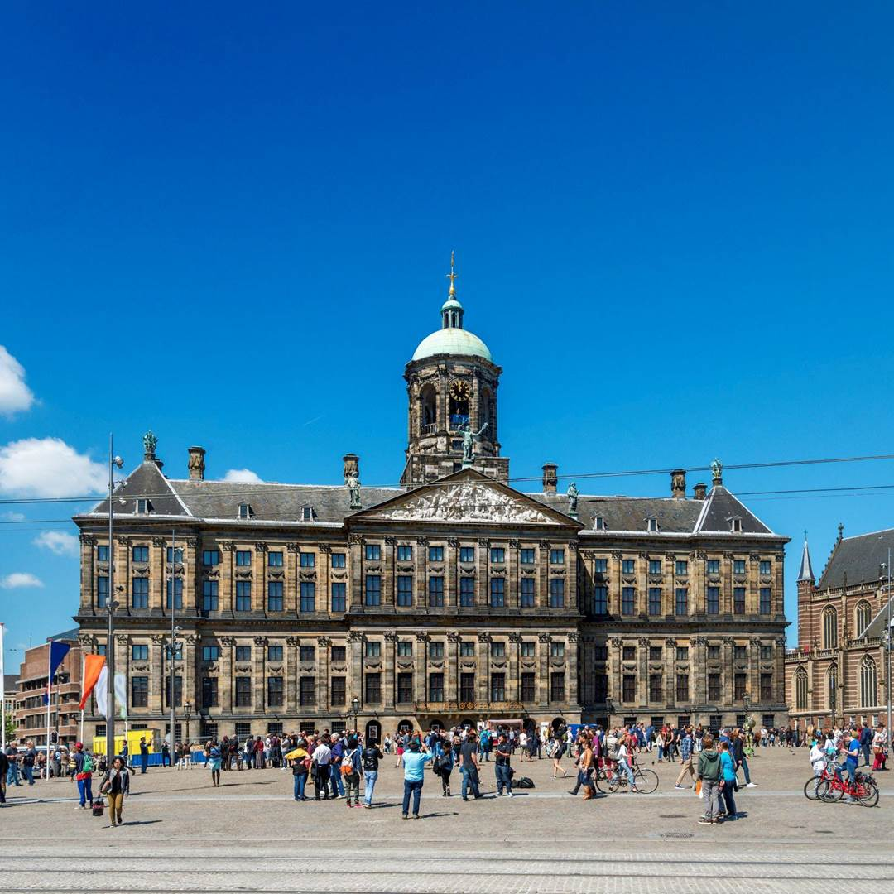
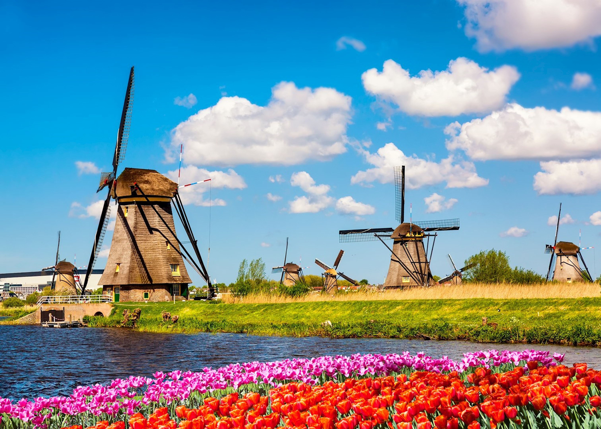
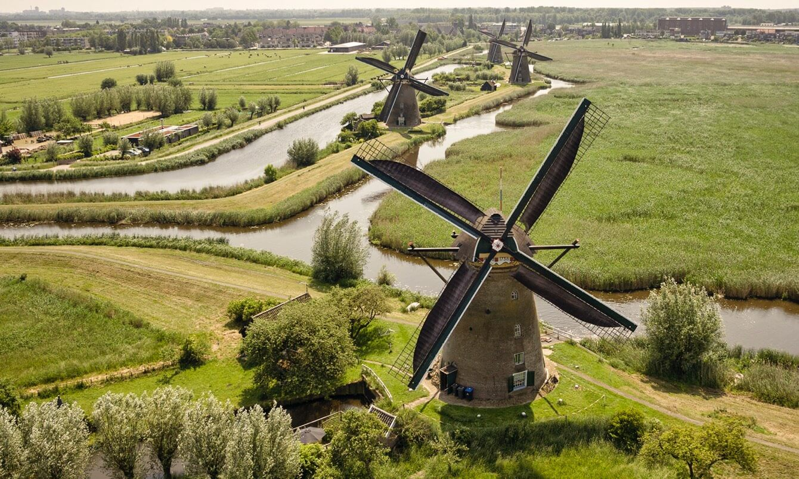
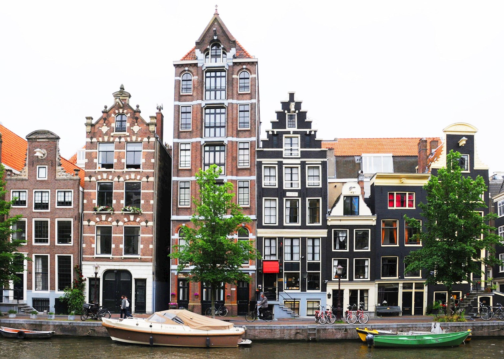
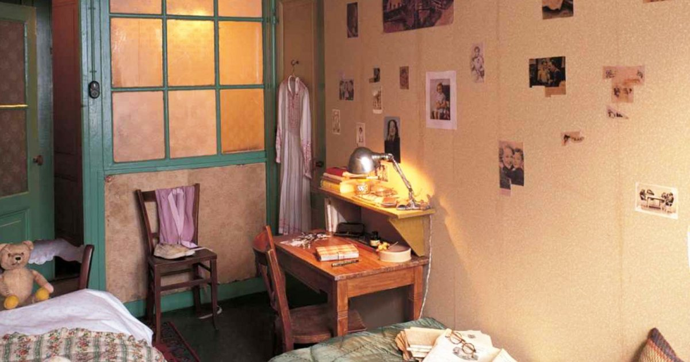
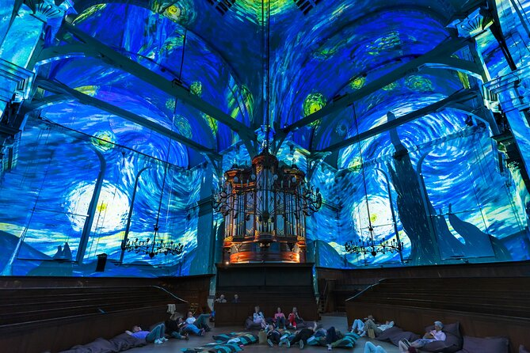

Rijksmuseum (Amsterdam)


Rijksmuseum in Amsterdam is a treasure trove of art, history, and Dutch culture. Housed in an iconic building that blends classic and
modern architecture, it showcases masterpieces by Rembrandt, Vermeer, and other legendary artists. Wander through its grand halls,
admire the intricate details of centuries-old paintings, and feel the stories of the Netherlands come alive. Every corner offers a
glimpse into the nation’s rich past, from Golden Age paintings to historic artifacts, making the Rijksmuseum a must-visit for art
lovers and curious travelers alike.
Best time to visit:
Early morning or late afternoon to avoid peak crowds, especially on weekends.
Opening hours:
Daily, 9:00–17:00. Closed on certain holidays (check official site).
Entry:
Ticket required (€20–€25 for adults). Free entry for visitors under 18. Audio guide available for deeper experience.
SEE MAP
Royal Palace of Amsterdam


The Royal Palace of Amsterdam stands as a magnificent testament to Dutch history and grandeur. Located on the bustling Dam Square, its
stately façade and elegant interiors tell tales of royal ceremonies, historic events, and centuries of civic pride. Visitors can wander
through opulent halls adorned with chandeliers, gilded details, and classical artwork, feeling the pulse of Amsterdam’s rich past.
A visit here is not just a tour—it’s an immersion into the elegance, tradition, and timeless charm of the Netherlands’ royal heritage.
Best time to visit:
Late morning or early afternoon on weekdays, when crowds are lighter and lighting inside is ideal for details and photos.
Opening hours:
Generally open daily, around 10:00–17:00. Hours may vary due to official royal events.
Entry:
Ticket required (€12–€15). Free entry for visitors under 18. Audio guide usually included.
SEE MAP
Kinderdijk Windmills


The Kinderdijk Windmills are a picturesque icon of Dutch ingenuity and tradition. Nestled along the winding canals of South Holland,
this UNESCO World Heritage site features 19 perfectly preserved windmills that have been protecting the land from floods for centuries.
Stroll along the scenic paths, watch the blades turn gracefully in the wind, and imagine life in historic Dutch villages. Kinderdijk
is not just a glimpse into the Netherlands’ past—it’s a living testament to human resilience and harmony with nature, offering
unforgettable views and a serene, timeless atmosphere.
Best time to visit:
Spring and summer for green landscapes, or early morning / golden hour for peaceful views and great photos.
Opening hours:
Open year-round; outdoor areas accessible daily. Museums and interior windmills usually open 9:00–17:30 (seasonal variations apply).
Entry:
Ticket required for museums and windmill interiors (€16–€19); walking paths and exterior views are free.
SEE MAP
Keukenhof Gardens
Keukenhof Gardens, often called the Garden of Europe, is a vibrant symphony of colors and fragrances. Every spring, millions of tulips,
daffodils, hyacinths, and other blooms transform the park into a breathtaking floral wonderland. Stroll along winding paths, discover
themed gardens, and marvel at artfully designed flower displays that celebrate Dutch horticultural mastery. Keukenhof isn’t just a
feast for the eyes—it’s a sensory journey, capturing the essence of the Netherlands’ beauty, creativity, and the timeless magic of
spring.
Best time to visit:
Mid-April to early May, when tulips are in full bloom; visit on weekdays and early morning for fewer crowds.
Opening hours:
Seasonal (usually mid-March to mid-May), daily approx. 8:00–19:30.
Entry:
Ticket required (€19–€22 depending on season and age); tickets are best purchased online in advance.
SEE MAP
Anne Frank House (Amsterdam)


The Anne Frank House in Amsterdam is a deeply moving and unforgettable destination. Step inside the historic canal house where Anne
Frank and her family hid during World War II, and follow the path of her diary’s words that have touched hearts worldwide. The
preserved rooms, poignant exhibits, and personal artifacts bring history to life, offering a reflective journey into courage, hope,
and the resilience of the human spirit. Visiting the Anne Frank House is not just a tour—it’s an emotional encounter with history that
stays with you long after you leave.
Best time to visit:
Early morning or late evening; tickets sell out quickly, so advance booking is essential.
Opening hours:
Daily, approx. 9:00–22:00 (hours may vary by season and day).
Entry:
Ticket required (€14–€16); tickets are available online only with a reserved time slot.
SEE MAP
Van Gogh Museum (Amsterdam)


The Van Gogh Museum in Amsterdam is a vibrant celebration of one of the world’s most beloved artists. Home to the largest collection
of Vincent van Gogh’s paintings, drawings, and letters, the museum immerses visitors in his vivid colors, expressive brushstrokes, and
extraordinary life story. Wander through galleries that trace his journey from early works to iconic masterpieces like Sunflowers and
The Starry Night, and experience the passion, emotion, and genius that continue to inspire art lovers around the globe. The Van Gogh
Museum is more than an exhibition—it’s a journey into the soul of creativity itself.
Best time to visit:
Early morning on weekdays or late afternoon; book tickets in advance to avoid long queues.
Opening hours:
Daily, approx. 9:00–18:00 (extended hours on Fridays; times may vary seasonally).
Entry:
Ticket required (€20–€25); entry is timed and must be reserved online.
SEE MAP